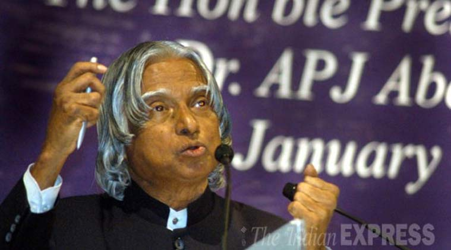

POST PRECIDENCY
After leaving office, Kalam became a visiting professor at the Indian Institute of Management Shillong, the Indian Institute of Management Ahmedabad, and the Indian Institute of Management Indore; an honorary fellow of Indian Institute of Science, Bangalore;chancellor of the Indian Institute of Space Science and Technology Thiruvananthapuram; professor of Aerospace Engineering at Anna University; and an adjunct at many other academic and research institutions across India. He taught information technology at the International Institute of Information Technology, Hyderabad, and technology at Banaras Hindu University and Anna University. In May 2012, Kalam launched a programme for the youth of India called the What Can I Give Movement, with a central theme of defeating corruption. In 2011, Kalam was criticised by civil groups over his stand on the Koodankulam Nuclear Power Plant; he supported the establishment of the nuclear power plant and was accused of not speaking with the local people. The protesters were hostile to his visit as they saw him as a pro-nuclear scientist and were unimpressed by the assurances he provided regarding the safety features of the plant.
